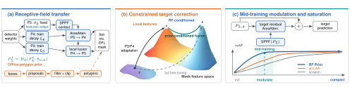

RF Prior
Context-Preserving Representation Adaptation
for Instance Segmentation Transfer
Transferring an instance segmentation model requires adapting to target objects and boundaries while retaining useful pretrained context. RF Prior preserves the source-trained P5 transformation, adapts P3/P4 representations, and combines spatial pyramid pooling with area attention to bring global context into local mask prediction.

Preserved parameters, adaptive features
P5 retains its learned parameters while its features evolve through the adapted P4 input and normalization state s5. The input Jacobian J54 carries the contextual learning signal back to P4; g4 and g5 denote loss gradients at the separate decoder inputs. This couples source-parameter preservation to target-adaptive representations.